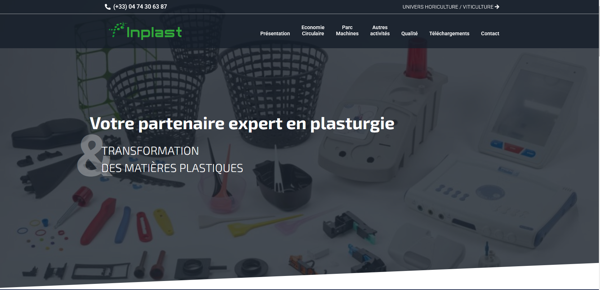
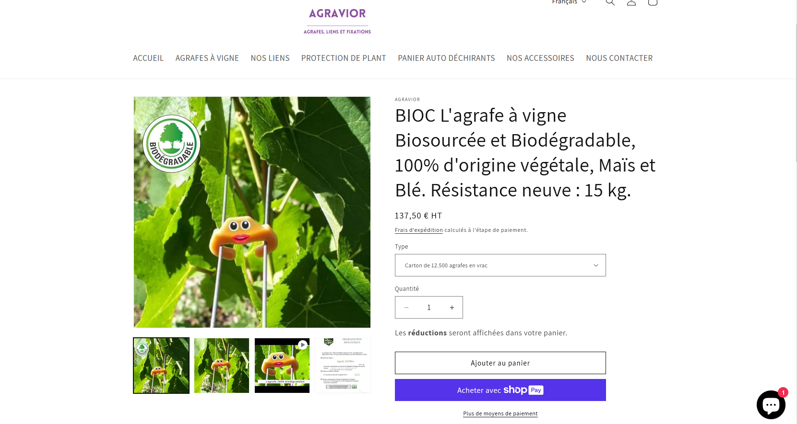
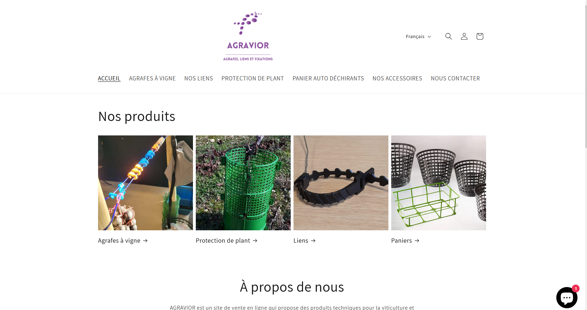

Context
Mon travail
Récap
Agravior est un site de vente en ligne qui propose des produits pour la viticulture et l'horticulture, tels que des agrafes à vignes ,fixations, liens et protection de plant et d'autres produits qui facilite la tâche aux Agriculteurs. Agravior.com est la filiale d'Inplast.
(Avant)
Le contexte global de ce projet était de faire une refonte de leur site vitrine afin de le rendre plus moderne, tout en permettant aux utilisateurs d'acheter directement les différents produits en ligne, une fonctionnalité qui n'était pas disponible avant. Pour cela, nous avons utilisé Shopify pour la partie vitrine du site. De plus, pour la réalisation de ce projet, nous étions deux.
(Apres)
Pendant la réalisation de ce site, je me suis concentré sur la partie visuelle avec le listing des produits, tandis que mon collègue s'occupait du paramétrage, de la gestion du panier, du paiement, etc.
Pour ce faire, j'ai du apprendre un langage de programmtion specifique a Shopify appelé Liquid.
Malgré l'apparence simpliste de Shopify, ce système reste bien différent des autres disponibles pour le web et nécessite une certaine maîtrise.
Dans l'ensemble, j'ai dû créer des pages pour afficher les différents produits par catégorie, permettre la visualisation d'un produit, ainsi que des pages d'accueil, de contact, de présentation, et bien d'autres.
 Ce projet représente ma première expérience avec Shopify et le langage Liquid. Tout au long de sa réalisation, j'ai pu développer une solide maîtrise de cette plateforme et de ses spécificités. J'ai appris à exploiter pleinement ses fonctionnalités pour répondre efficacement aux besoins d'une entreprise, en créant un site à la fois moderne et fonctionnel. Cette expérience m'a permis d'acquérir un véritable professionnalisme, en respectant les exigences techniques et esthétiques, tout en optimisant l'expérience utilisateur.